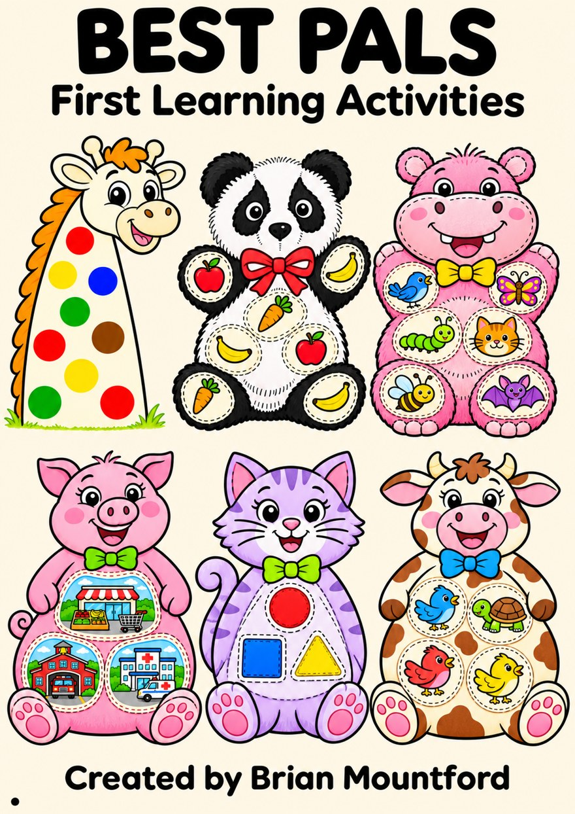

<!doctype html>
<html lang="en-GB"><meta charset="utf-8">
<meta name="viewport" content="width=device-width,initial-scale=1">
<title>BEST PALS — First Learning Activities</title>
<style>
*{box-sizing:border-box}body{margin:0;background:#10283c;color:white;font:16px Arial,sans-serif}
header{position:sticky;top:0;z-index:1;background:#10283c;padding:.6rem;text-align:center;border-bottom:2px solid #d6b36b}
a{color:#ffe1a1}nav{display:flex;justify-content:center;align-items:center;gap:.65rem;margin-top:.55rem;flex-wrap:wrap}
button,select{font:inherit;min-height:38px;border-radius:5px;padding:.22rem .55rem;border:1px solid #d6b36b;background:#fdfaf0;color:#172b3e}button:disabled{opacity:.55}
figure{margin:.6rem auto 1.2rem;width:min(100%,690px)}img{display:block;width:100%;height:auto}
@media(prefers-reduced-motion:no-preference){img.turn{animation:turn .2s ease-out}@keyframes turn{from{opacity:.5;transform:perspective(1100px) rotateY(-4deg)}to{opacity:1;transform:none}}}
</style>
<header><a href="/BM_MAIN_ENTRANCE_40.html#page-69">Back to Main Entrance</a>
<nav aria-label="Flipbook navigation"><button id="prev" disabled>‹ Previous</button>
<select id="jump" aria-label="Go to page"><option value="0">Front cover</option></select>
<button id="next">Next ›</button><output id="count" aria-live="polite">1 / 8</output></nav></header>
<main><figure></figure></main>
<script>
const page=document.querySelector('#page'), previous=document.querySelector('#prev'), next=document.querySelector('#next'), jump=document.querySelector('#jump'), count=document.querySelector('#count');
const labels=['Front cover','Gerald the Giraffe','Patch the Panda','Hugo the Hippo','Pamela Pig','Clarice the Cat','Connie the Cow','Back cover'];
labels.slice(1).forEach((label,i)=>jump.add(new Option(label,i+1)));
let index=0;
function show(value){
 if(value<0||value>=labels.length)return;
 index=value;
 page.src='page-'+String(index).padStart(2,'0')+'.jpg';
 page.alt=labels[index]+' of BEST PALS — First Learning Activities';
 page.classList.remove('turn');
 requestAnimationFrame(()=>requestAnimationFrame(()=>page.classList.add('turn')));
 jump.value=String(index);count.value=(index+1)+' / '+labels.length;
 previous.disabled=index===0;next.disabled=index===labels.length-1;
 window.scrollTo(0,0);
}
previous.onclick=()=>show(index-1);next.onclick=()=>show(index+1);
jump.onchange=()=>show(Number(jump.value));
document.addEventListener('keydown',e=>{
 if(e.target===jump)return;
 if(e.key==='ArrowLeft'||e.key==='ArrowRight'){e.preventDefault();show(index+(e.key==='ArrowRight'?1:-1));}
});
</script></html>